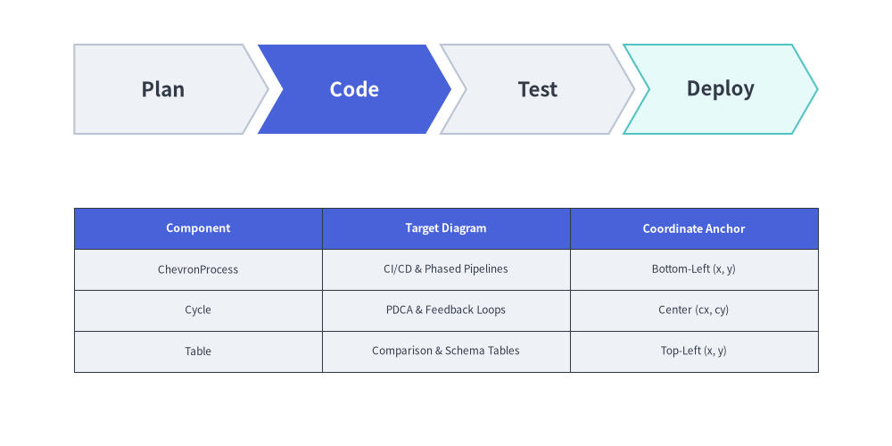
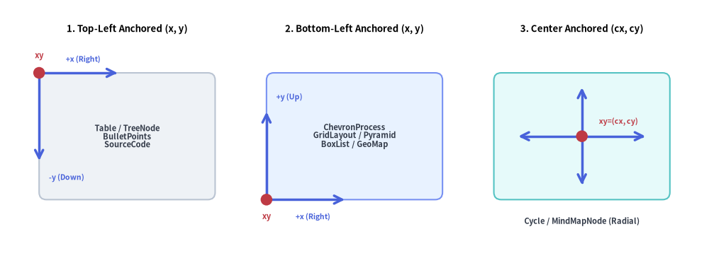
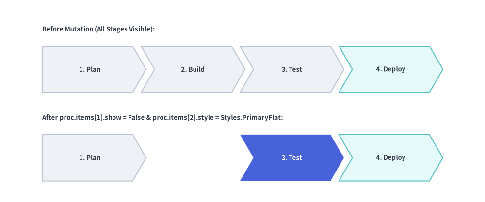

SmartArts Overview
Drawing structured diagrams (such as process flows, comparison tables, directory trees, or mindmaps) using raw shapes and lines often requires calculating hundreds of manual coordinates.
The drawlib.smartarts module eliminates this boilerplate by providing high-level, declarative layout components.
1. What SmartArts Can Do

Source Code
from drawlib.canvas import save, setup
from drawlib.smartarts import ChevronProcess, Table
from drawlib.styles import Styles
setup(width=120, height=60)
# 1. ChevronProcess: Automatic stage spacing and interlocking angles
proc = ChevronProcess(
style=Styles.Neutral,
text_style=Styles.DarkBold,
description_style=Styles.Dark,
flat_left_end=True,
spacing=2.0,
)
proc.add("Plan")
proc.add("Code", style=Styles.PrimaryFlat, text_style=Styles.WhiteBold)
proc.add("Test")
proc.add("Deploy", style=Styles.SecondaryNeutral)
proc.draw(xy=(10, 42), width=100, height=12)
# 2. Table: Structured comparison and schema datasets
tbl = Table(
cell_style=Styles.NeutralFlat,
text_style=Styles.Dark.patch(text_size=8.5),
header_cell_style=Styles.PrimaryFlat,
header_text_style=Styles.WhiteBold.patch(text_size=9.0),
border_style=Styles.DarkThin,
)
data = [
["Component", "Target Diagram", "Coordinate Anchor"],
["ChevronProcess", "CI/CD & Phased Pipelines", "Bottom-Left (x, y)"],
["Cycle", "PDCA & Feedback Loops", "Center (cx, cy)"],
["Table", "Comparison & Schema Tables", "Top-Left (x, y)"],
]
tbl.draw(xy=(10, 32), width=100, height=22, data=data)
save()
2. Public Exports (drawlib.smartarts)
All SmartArts components, mutable item/configuration models, and helper function aliases are exported directly from drawlib.smartarts:
from drawlib.smartarts import (
# Primary SmartArt Components
BoxList,
BulletPoints,
ChevronProcess,
Cycle,
GeoMap,
GridLayout,
MindMapNode,
Pyramid,
SourceCode,
Table,
TreeNode,
# Mutable Item & Style Models
BoxListItem,
BulletPointItem,
ChevronItem,
CycleCenter,
CycleItem,
GridItem,
PyramidItem,
SourceCodeStyles,
# Function Aliases
get_source_code_styles,
sourcecode,
)
3. Component Catalog Matrix
| Component | Primary Use Case | Anchor System | Key Methods & Item Models |
|---|---|---|---|
ChevronProcess |
Phased pipelines, CI/CD stages, migration roadmaps | Bottom-Left (x, y) |
add(...) -> ChevronItem, items, draw(..., scale=1.0) |
Cycle |
PDCA devops loops, circular lifecycles, state loops | Center (cx, cy) or Bottom-Left |
add(...) -> CycleItem, set_center() -> CycleCenter, items, center, draw(...) |
Table |
Service SLAs, specification matrices, DB schemas | Top-Left (x, y) |
set_style_cell_*(), set_style_border(), reset_styles(), draw(...), draw_flexible(...) |
TreeNode |
Directory hierarchies, org charts, taxonomy trees | Top-Left (x, y) |
add(...) -> TreeNode, register_drawing_item(), set_drawing_item(), draw(...) |
MindMapNode |
Brainstorming nodes, radial feature maps, org trees | Center (cx, cy) |
add(...) -> MindMapNode, draw(xy, branch="bottom", scale=1.0) |
GridLayout |
Layered architectures, dashboard card grids | Bottom-Left (x, y) |
add(...) -> GridItem, items, draw(...), draw_flexible(...) |
Pyramid |
Testing pyramids, tiered memory/cache hierarchies | Bottom-Left (x, y) |
add(...) -> PyramidItem, items, draw(...), draw_flexible(...) |
BoxList |
Linear horizontal or vertical card sequences | Directional (x, y) |
add(...) -> BoxListItem, items, draw(..., scale=1.0) |
BulletPoints |
Architectural takeaways, RFC key points, checklists | Top-Left (x, y) |
set_indent(), set_bullet_style(), add(...) -> BulletPointItem, items, draw(...) |
SourceCode |
Syntax-highlighted code blocks in diagrams | Top-Left (x, y) |
SourceCode.draw(...) / sourcecode(...), SourceCode.get_text(), SourceCodeStyles.get() |
GeoMap |
Geographical maps (GeoMap.World.*, GeoMap.Countries.*, GeoMap.Cities.*) |
Bottom-Left (x, y) |
get_areas(), set_area_styles(), draw(), get_area_xy(), lonlat_to_xy(), data |
Looking for speech bubbles & callouts? The
bubblespeech()primitive is part ofdrawlib.shapesand is documented in Cylinders, Faces & Callouts.
4. Coordinate Anchor & Normalization Cheat Sheet
Understanding anchor conventions is essential when combining multiple SmartArts onto a single canvas:
- Top-Left Anchored (
Table,TreeNode,BulletPoints,SourceCode):
You specify the top-left coordinate(x, y). Content flows horizontally to the right (+x) and vertically downward (-y). - Bottom-Left Anchored (
ChevronProcess,GridLayout,Pyramid,BoxList,GeoMap):
You specify the bottom-left coordinate(x, y)(forBoxListwith defaultalign="left"or"bottom"). The bounding container extends rightward (+x) and upward (+y). - Center Anchored (
Cycle,MindMapNode):
You specify the center coordinate(cx, cy)(or passalign="bottom_left"toCycle.draw()). The diagram expands symmetrically or radially around the center.

Source Code
from drawlib.canvas import save, setup
from drawlib.lines import line
from drawlib.shapes import circle, rectangle
from drawlib.styles import Styles
from drawlib.text import text
setup(width=145, height=54)
# 1. Left Panel: Top-Left Anchored (x, y)
text((26.0, 48.0), "1. Top-Left Anchored (x, y)", style=Styles.BlackBold.patch(text_size=9.5))
rectangle(
(26.0, 26.0),
width=36.0,
height=26.0,
style=Styles.Neutral.patch(shape_r=1.5),
text="Table / TreeNode\nBulletPoints\nSourceCode",
text_style=Styles.DarkBold.patch(text_size=8.0),
)
# Growth arrows from top-left (8.0, 39.0)
line((8.0, 39.0), (24.0, 39.0), arrow_head="->", style=Styles.PrimaryBold)
text((17.0, 41.8), "+x (Right)", style=Styles.PrimaryBold.patch(text_size=7.5))
line((8.0, 39.0), (8.0, 21.0), arrow_head="->", style=Styles.PrimaryBold)
text((10.0, 17.5), "-y (Down)", style=Styles.PrimaryBold.patch(text_size=7.5, halign="left"))
circle((8.0, 39.0), radius=1.2, style=Styles.DangerFlat)
text((8.0, 42.5), "xy", style=Styles.DangerBold.patch(text_size=8.0))
# 2. Middle Panel: Bottom-Left Anchored (x, y)
text((72.5, 48.0), "2. Bottom-Left Anchored (x, y)", style=Styles.BlackBold.patch(text_size=9.5))
rectangle(
(72.5, 26.0),
width=36.0,
height=26.0,
style=Styles.PrimaryNeutral.patch(shape_r=1.5),
text="ChevronProcess\nGridLayout / Pyramid\nBoxList / GeoMap",
text_style=Styles.DarkBold.patch(text_size=8.0),
)
# Growth arrows from bottom-left (54.5, 13.0)
line((54.5, 13.0), (70.5, 13.0), arrow_head="->", style=Styles.PrimaryBold)
text((64.0, 9.5), "+x (Right)", style=Styles.PrimaryBold.patch(text_size=7.5))
line((54.5, 13.0), (54.5, 31.0), arrow_head="->", style=Styles.PrimaryBold)
text((56.5, 34.0), "+y (Up)", style=Styles.PrimaryBold.patch(text_size=7.5, halign="left"))
circle((54.5, 13.0), radius=1.2, style=Styles.DangerFlat)
text((54.5, 9.5), "xy", style=Styles.DangerBold.patch(text_size=8.0))
# 3. Right Panel: Center Anchored (cx, cy)
text((119.0, 48.0), "3. Center Anchored (cx, cy)", style=Styles.BlackBold.patch(text_size=9.5))
rectangle(
(119.0, 26.0),
width=36.0,
height=26.0,
style=Styles.SecondaryNeutral.patch(shape_r=1.5),
)
# Radial expansion arrows from center (119.0, 26.0)
line((119.0, 26.0), (132.0, 26.0), arrow_head="->", style=Styles.PrimaryBold)
line((119.0, 26.0), (106.0, 26.0), arrow_head="->", style=Styles.PrimaryBold)
line((119.0, 26.0), (119.0, 36.0), arrow_head="->", style=Styles.PrimaryBold)
line((119.0, 26.0), (119.0, 16.0), arrow_head="->", style=Styles.PrimaryBold)
circle((119.0, 26.0), radius=1.2, style=Styles.DangerFlat)
text((122.5, 29.0), "xy=(cx, cy)", style=Styles.DangerBold.patch(text_size=7.5, halign="left"))
text((119.0, 8.5), "Cycle / MindMapNode (Radial)", style=Styles.DarkBold.patch(text_size=8.0))
save()
To align components of size (W, H) on the same canvas grid, convert between Top-Left (left_x, top_left_y), Bottom-Left (left_x, bottom_y), and Center (center_x, center_y) anchors using:
center_x = left_x + W / 2.0
center_y = bottom_y + H / 2.0
top_left_y = bottom_y + H
| Component | Input xy Meaning |
To Align with Top-Left (X, Y) |
To Align with Bottom-Left (X, Y) |
|---|---|---|---|
Table, TreeNode, BulletPoints, SourceCode |
Top-Left (x, y) |
Pass (X, Y) directly |
Pass (X, Y + H) |
ChevronProcess, GridLayout, Pyramid, GeoMap |
Bottom-Left (x, y) |
Pass (X, Y - H) |
Pass (X, Y) directly |
BoxList (align="left" or "bottom") |
Bottom-Left (x, y) |
Pass (X, Y - H) |
Pass (X, Y) directly |
MindMapNode |
Root Center (cx, cy) |
Pass (X + W/2, Y - H/2) |
Pass (X + W/2, Y + H/2) |
Cycle (align="center") |
Orbit Center (cx, cy) |
Pass (X + R, Y - R) |
Pass (X + R, Y + R) |
Cycle (align="bottom_left") |
Bottom-Left (x, y) |
Pass (X, Y - H) |
Pass (X, Y) directly |
5. Unified Deferred Mutation Lifecycle (add(), items, show, and scale)
Stateful SmartArt components follow a unified 4-phase deferred mutation lifecycle:
- Instantiate (
__init__): Initialize the component with default styles, spacing, and layout parameters. - Register Content (
add(..., show: bool = True)): Populate stages, cells, tiers, cards, or child nodes. Every.add(...)call returns a mutable item instance (ChevronItem,CycleItem,GridItem,PyramidItem,BoxListItem,BulletPointItem,TreeNode, orMindMapNode), and all registered items remain accessible via.items(or.childrenfor trees/mindmaps, and.centerforCycleCenter). - Mutate Before or Between
draw()Calls: Because item attributes (.style,.text_style,.text,.description,.show) are evaluated lazily insidedraw(), you can mutate any item's style, label, or visibility before callingdraw()—or between multipledraw()frames (such as step-by-step animations or multi-state diagrams) without reconstructing the component:
from drawlib.canvas import save, setup
from drawlib.smartarts import ChevronProcess
from drawlib.styles import Styles
from drawlib.text import text
setup(width=115, height=48)
proc = ChevronProcess(
style=Styles.Neutral,
text_style=Styles.DarkBold.patch(text_size=9.5),
description_style=Styles.Dark.patch(text_size=8.0),
flat_left_end=True,
spacing=2.0,
)
proc.add("1. Plan")
proc.add("2. Build")
proc.add("3. Test")
proc.add("4. Deploy", style=Styles.SecondaryNeutral)
# Top Row: Initial Render (All 4 stages visible)
text((10, 41), "Before Mutation (All Stages Visible):", style=Styles.DarkBold.patch(text_size=9.5, halign="left"))
proc.draw(xy=(10, 26), width=95, height=11)
# Mutate items in-place between draw() calls—sibling coordinates never shift!
proc.items[1].show = False
proc.items[2].style = Styles.PrimaryFlat
proc.items[2].text_style = Styles.WhiteBold.patch(text_size=9.5)
# Bottom Row: Re-render after mutating items[1] and items[2]
text((10, 20), "After proc.items[1].show = False & proc.items[2].style = Styles.PrimaryFlat:", style=Styles.DarkBold.patch(text_size=9.5, halign="left"))
proc.draw(xy=(10, 5), width=95, height=11)
save()

- Render (
draw(xy=..., ..., scale: float = 1.0)): Render the component onto the canvas at anchorxy(or statelessly viaSourceCode.draw(xy, width, ...)). Passingscale(e.g.scale=0.8orscale=1.2) proportionally scales all dimensions, margins, corner radii, line widths, and font sizes relative toxy.